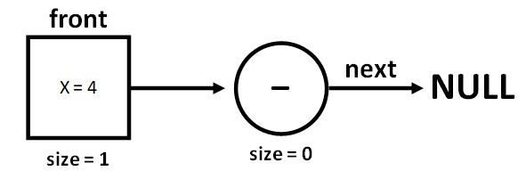
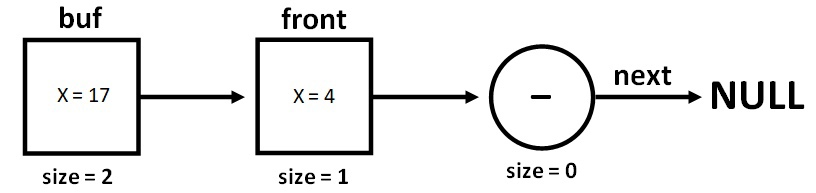

Навигация по странице:
1. Стек это
2. Алгоритм
3. Функция push
4. Визуализация функции push
5. Функция pop
6. Визуализация функции pop
7. Полный алгоритм
8. Применение стека
Стек
Навигация по странице:
1. Стек это
2. Алгоритм
3. Функция push
4. Визуализация функции push
5. Функция pop
6. Визуализация функции pop
7. Полный алгоритм
8. Применение стека
Стек — абстрактный тип данных, представляющий собой список элементов, организованных по
принципу LIFO (англ. last in — first out, «последним пришёл — первым вышел»). Чаще всего принцип работы
стека сравнивают со стопкой тарелок: чтобы взять вторую сверху, нужно снять верхнюю.
Способом реализации очереди выберем связанный список.
Алгоритм
В программе, мы храним указатель на первый элемент стека - front. У front инициализацируем переменную size равную 0. Этот элемент стека будет нулевым и не измениться в течение всей программы. При удалении всех элементов стека, нулевой front не будет удален, чтобы мы могли его снова использовать при добавлении уже нового первого элемента. С помощью функции push добавляем элемент, с помощью функции pop удаляем.
Функция push
Функция push добавляет в стек новыый элемент. Она получает указатель на первый элемент стека front и переменную x, значение
которой должны добавить в стек.
Действия функции:
1. Создаем буферный указатель buf(2);
2. buf->next = front, теперь buf встает на первое место в стеке(4);
3. Дозаполняем buf нужными значениями(4-6);
4. Возвращаем buf, теперь указатель front равен buf(7).
1
2
3
4
5
6
7
8
9
10
struct stack* push(struct stack* front, int x) { struct stack* buf = malloc(sizeof(struct stack)); if (buf) { // проверка malloc buf->next = front; buf->size = front->size + 1; buf->X = x; return buf; } return front; }
Давайте визуализируем действия этой функции:
1. Изначально стек выглядит так:

2. buf->next = front, заполняем buf нужными значениями, теперь buf встает на первое место в стеке:

3. Возвращаем buf, теперь указатель front равен buf, стек теперь выглядит так:

Функция pop
Функция pop удаляет первый элемент в стеке. Она получает указатель на первый элемент front. front->size == 0 – это означает, что стек пустой и мы возвращаем тот же указатель front. Иначе мы возвращаем front->next, то есть второй элемент в стеке становится первым.
1
2
3
4
5
6
7
struct stack* pop(struct stack* front) { if (front->size == 0) { printf("Очередь пуста!\n"); return front; } return front->next; }
Давайте визуализируем действия этой функции:
Действие полностью обратно добавлению элемента, в отличие от очереди.
Полный алгоритм:
Входные данные:
push n - вставить элемент n в стек;
pop - удалить первый элемент стека;
end - конец программы.
Код на Си:
1
2
3
4
5
6
7
8
9
10
11
12
13
14
15
16
17
18
19
20
21
22
23
24
25
26
27
28
29
30
31
32
33
34
35
36
37
38
39
40
41
42
43
44
45
46
47
48
49
50
51
52
53
54
55
#define _CRT_SECURE_NO_WARNINGS #include<stdio.h> #include<stdlib.h> #include<string.h> #include <locale.h> struct stack { struct stack* next; int X; int size; }; struct stack* push(struct stack* front, int x) { struct stack* buf = malloc(sizeof(struct stack)); if (buf) { // проверка malloc buf->next = front; buf->size = front->size + 1; buf->X = x; return buf; } return front; } struct stack* pop(struct stack* front) { if (front->size == 0) { printf("Очередь пуста!\n"); return front; } return front->next; } int main() { setlocale(LC_ALL, "Rus"); struct stack* front; front = malloc(sizeof(struct stack)); if (front) { // проверка malloc front->size = 0; front->next = NULL; int n; char s[10]; while (0 == 0) { scanf("%s", &s); if (strcmp(s, "push") == 0) { scanf_s("%i", &n); front = push(front, n); // добавление элемента } if (strcmp(s, "pop") == 0) { front = pop(front); // удаление элемента } if (strcmp(s, "end") == 0) break; if (front->size != 0) printf("Первый элемент равен %i \n", front->X); } } return 0; }
Применение стека
Программный вид стека используется для обхода структур данных, например, дерево или граф. При использовании рекурсивных функций также будет применяться стек, но его аппаратный вид. Кроме этих назначений, стек используется для организации стековой машины, реализующей вычисления в обратной польской записи. Примером использования стековой машины является программа Unix dc. Для отслеживания точек возврата из подпрограмм используется стек вызовов.
Code.C
© Copyright Павел Калашников 2021
обратная связь code.c04@mail.ru